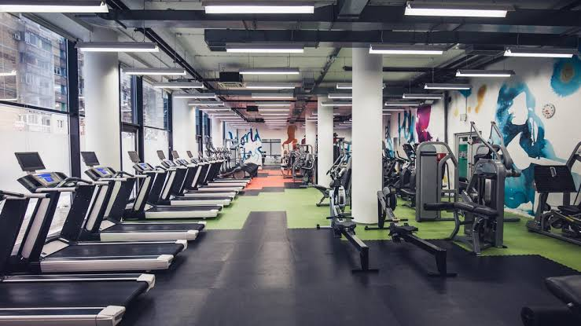

Our Gym typically offer a range of services to cater to the fitness needs of their members. Here are some common services provided by gyms:
Our Gym typically have a variety of exercise machines and equipment such as treadmills, elliptical trainers, stationary bikes, weight machines, free weights, and more.
Our Gym often offer a range of group exercise classes such as yoga, Pilates, spinning, Zumba, aerobics, HIIT (High-Intensity Interval Training), and strength training classes.
Our gym provide personal training services where members can work one-on-one with a certified personal trainer to develop a customized workout plan and receive personalized coaching.
Our gym have dedicated functional training areas equipped with tools like kettlebells, TRX suspension trainers, battle ropes, and plyometric boxes for functional fitness workouts.
Our Gym usually have designated cardio areas with machines like treadmills, stationary bikes, elliptical trainers, and stair climbers for cardiovascular exercise.
Our Gym typically have sections dedicated to weightlifting with various weight machines, free weights, and benches for strength training exercises.
Our gym provide locker rooms equipped with lockers, showers, and changing areas for the convenience of their members.
Our gym offer sauna and steam room facilities for relaxation and post-workout recovery.
Our gym offer nutritional counseling and guidance to help members with their diet and nutrition goals.
Our gym organize social and community events such as fitness challenges, workshops, seminars, and member appreciation events to foster a sense of community among members.
Our gym provide childcare services or have designated kids' areas where parents can leave their children while they work out.
With the advancement of technology, our gym offer online resources such as workout tracking apps, virtual classes, and nutrition guides to support their members' fitness journey both inside and outside the gym.